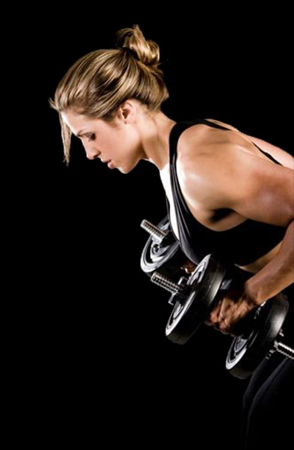
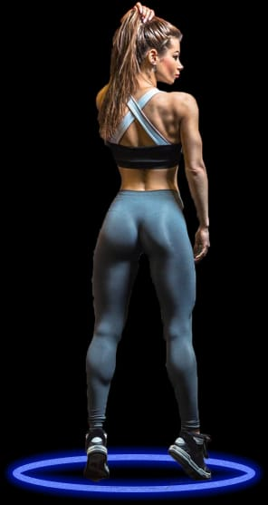
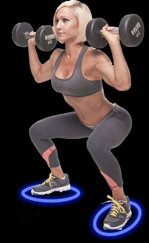

Show your body love by keeping fit it returns the favour of helping you fight disease.
1

Training
We work with amaizing and above all experienced trainers

You already know there are many great reasons to exercise, from improving energy, mood, sleep,. Phasellus imperdiet, and health to reducing anxiety, stress, and depression.... And detailed exercise instructions and workout plans are just a click away. But if knowing how and why to exercise was enough, we’d all be in shape. Making exercise a habit takes more—you need the right mindset and a smart approach.
While practical concerns like a busy schedule or poor health can make exercise more challenging, for most of us, the biggest barriers are mental. Maybe it’s a lack of self-confidence that keeps you from taking positive steps, or your motivation quickly flames out, or you get easily discouraged and give up. We’ve all been there at some point..
Our Team
Our Team consists of Nutritionist to give health advice
Yoga instructors for goodyoga exercise
Cardio trainer for te dance exercise for those who want to have cardio

About
Fit4mom is an online based community for mothers t work out and bring them together so as to be able to break the norm that pregnant women cant work out
Our Mission
Our sole mission is to shape and create fit mothers by providing workouts,healthy living and fitness recipies.
Vission
Our vision is to provide fitness classes and a network for mom's to support every stage of motherhood by helping them be strong in mind and body
.jpg)

.png)